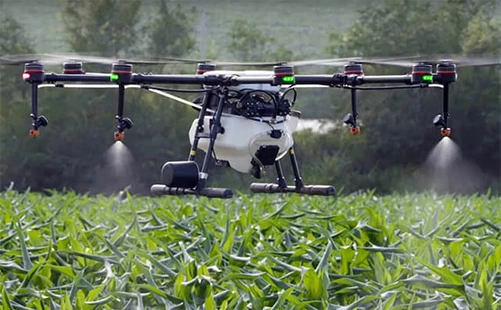

Spray Application
Drone use to apply spray treatments is already widespread in south-east Asia, with South Korea using drones for approximately 30% of their agriculture spraying. Drone sprayers are able to navigate very hard to reach areas, such as steep tea fields at high elevations. Drone sprayers save workers from having to navigate fields with backpack sprayers, which can be hazardous to their health. Drones sprayers delivery very fine spray applications that can be targeted to specific areas to maximize efficiency and save on chemical costs. Currently drone sprayer regulations vary widely between countries. In Canada, they are not currently legal as more testing needs to be done to understand the impact of spray drift. Some regulation proposals recommend that only trained professionals be tasked with flying spray drones as is the case with Yamaha, who does not sell the spray drones they manufacture, but leases spray drone services complete with licenced operators.
